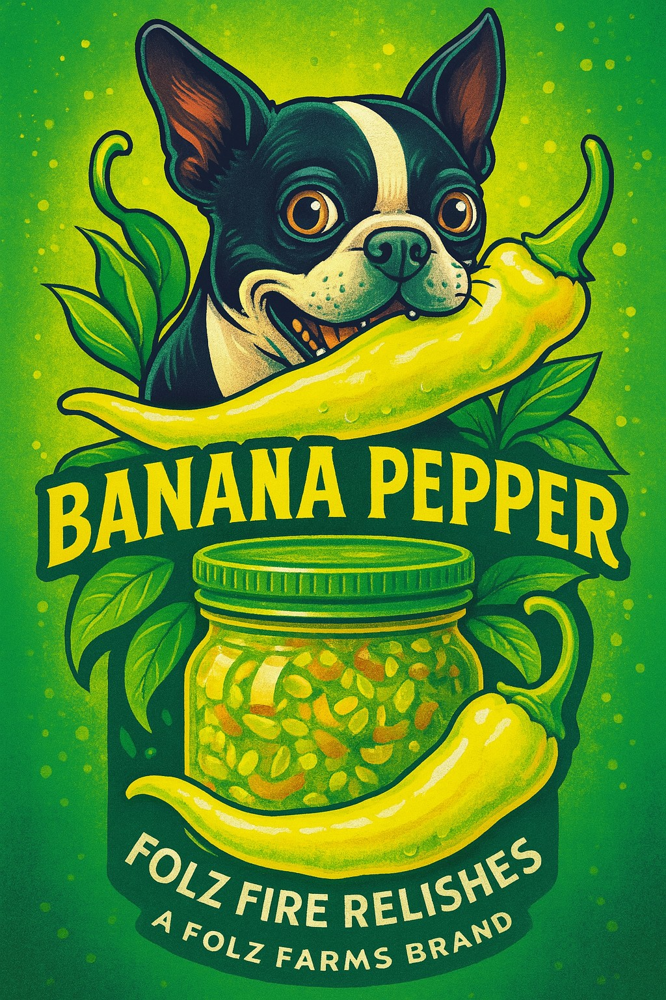
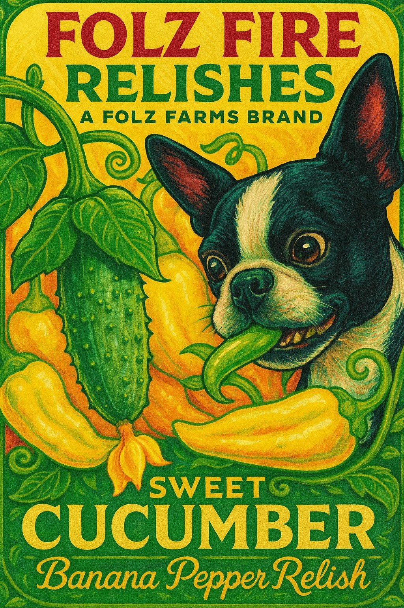

Our Handcrafted Goods
Everything you see here started as a seed in the backyard. We pick, chop, jar, and seal with pride.

Banana Pepper Relish
Sweet heat with a bright crunch. Great on dogs, brats, or right off the spoon.

Pickles
Classic garlic dills and spicy spears – made from our crunchy cukes.

Salsa
Chunky, bold, and perfect with chips or tacos. Backyard-grown tomatoes and peppers in every batch.